DEF — definition KEY — key idea to remember ↪ — bridge to another day ⚠ — common pitfall
You have met linear algebra before, as rules for computing with vectors and matrices. This appendix is about something else: what those rules look like, and why a statistician needs them. Every method in this course turns out to be a question about geometry. Which sample is nearest? How far is a measurement from a model? In which direction does a data cloud vary most? How can a coefficient be made smaller?
It builds that geometry from pictures, using a small set of objects that return throughout:
Each section ends with a question to check your understanding, with the answer folded away. The formal definitions, the proofs and the algorithms behind the pictures are in Appendix C.
Plotting helpers used in this appendix
col_blue <-"#1F4E79"# what is kept: the model, the projectioncol_orange <-"#D35400"# what is left: the residual, the differencecol_green <-"#2E7D5B"# a basis, a set of new axescol_grey <-"grey45"a_vec <-c(3, 0); b_vec <-c(1, 2)M_mat <-matrix(c(2, 0, 1, 2), 2) # columns (2, 0) and (1, 2)A_mat <-t(M_mat) %*% M_mat # 4 2 / 2 5plane <-function(xlim, ylim, main ="", xlab ="", ylab ="", grid =TRUE) {plot(NA, xlim = xlim, ylim = ylim, asp =1, main = main, xlab = xlab, ylab = ylab,las =1, cex.main =0.95)if (grid) abline(h =seq(floor(ylim[1]), ceiling(ylim[2])),v =seq(floor(xlim[1]), ceiling(xlim[2])), col ="grey92")abline(h =0, v =0, col ="grey65")}arrow <-function(from, to, col ="black", lwd =2.5, ...)arrows(from[1], from[2], to[1], to[2], length =0.09, col = col, lwd = lwd, ...)right_angle <-function(p, u, v, s =0.2, col ="grey30") { u <- u /sqrt(sum(u^2)) * s; v <- v /sqrt(sum(v^2)) * slines(rbind(p + u, p + u + v, p + v), col = col)}unit_circle <-function(n =400) { t <-seq(0, 2* pi, length.out = n); cbind(cos(t), sin(t)) }ellipse_A <-function(A, level =1) { # all x with t(x) A x = level R <-chol(A); u <-unit_circle()t(solve(R, t(u))) *sqrt(level)}
Data are points
A tumour sample measured on two genes is a pair of numbers, and a pair of numbers is a point in the plane, or equivalently an arrow from the origin to that point. Forty samples measured on two genes are forty points: a data cloud.
Figure B.1: Left: one sample, measured on two genes, is a point and also an arrow from the origin. Right: forty samples form a data cloud. With 20,000 genes each sample is a point in a space of 20,000 dimensions, which cannot be drawn but obeys the same geometry.
In a data matrix \(\mathbf{X}\) each row is one sample and each column one variable, so an \(n \times p\) matrix is a cloud of \(n\) points in \(p\) dimensions. Everything in this appendix can be drawn for \(p = 2\), and everything remains true for \(p = 20{,}000\).
⚠ Expression data are usually stored with genes as rows and samples as columns. Statistical functions such as lm, prcomp and glmnet expect samples as rows. Check dim(X) before anything else, and transpose with t(X) if needed.
CautionCheck yourself
An expression file has 20,000 rows and 48 columns, one column per patient. You want to compare patients. How many points are in the cloud, and in how many dimensions do they live? What must you do before calling prcomp()?
TipAnswer
There are 48 points, one per patient, in a space of 20,000 dimensions, one per gene. prcomp() treats rows as observations, so the matrix must first be transposed with t() to give 48 rows and 20,000 columns.
Length and distance: two ways to measure
How long is the arrow \(\mathbf{b} = (1, 2)\)? The answer depends on how you are allowed to travel. As the crow flies, Pythagoras gives the Euclidean or L2 norm. Along the grid, like a taxi in Manhattan, you add the steps in each direction, which gives the Manhattan or L1 norm:
For \(\mathbf{b}\) these are \(\sqrt{5} \approx 2.24\) and \(3\). The distance between two points is the length of their difference, \(d(\mathbf{x}, \mathbf{y}) = \lVert\mathbf{x} - \mathbf{y}\rVert\).
DEF — A norm\(\lVert\mathbf{x}\rVert\) measures the length of a vector. The general family is the Lp norm, \(\big(\sum_j |x_j|^p\big)^{1/p}\), with \(p = 1\) and \(p = 2\) as the two important cases. Appendix C lists the three rules every norm must obey.
The clearest way to see the difference between the norms is to draw all vectors of length 1, the unit ball.
Code
par(mfrow =c(1, 2), mar =c(4, 4, 2, 1))plane(c(-0.5, 2.5), c(-0.5, 2.5), main ="two routes to b = (1, 2)")lines(c(0, 1, 1), c(0, 0, 2), col = col_orange, lwd =3)arrow(c(0, 0), b_vec, col = col_blue, lwd =3)text(0.5, 0, "1", pos =1, col = col_orange); text(1, 1, "2", pos =4, col = col_orange)text(0.3, 1.1, expression(sqrt(5)), col = col_blue)plane(c(-1.4, 1.4), c(-1.4, 1.4), main ="all vectors of length 1")u <-unit_circle()lines(u, col = col_blue, lwd =2.5)polygon(c(1, 0, -1, 0), c(0, 1, 0, -1), border = col_orange, lwd =2.5)polygon(c(1, -1, -1, 1), c(1, 1, -1, -1), border = col_grey, lwd =2, lty =2)legend("bottom", horiz =TRUE, bty ="n", cex =0.8, lwd =2.5, lty =c(1, 1, 2),col =c(col_blue, col_orange, col_grey), legend =c(expression(L[2]), expression(L[1]), expression(L[infinity])))
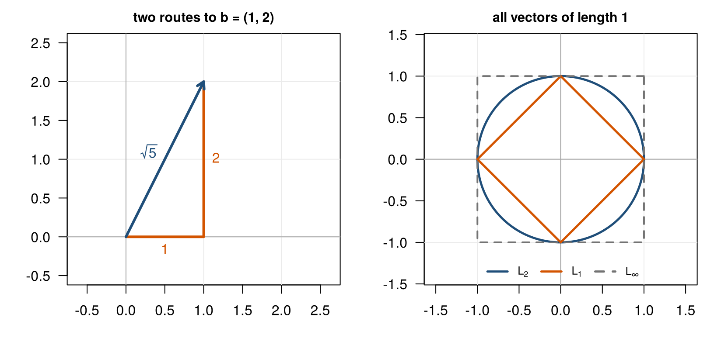
Figure B.2: Left: the Euclidean norm measures the straight line (\(\sqrt 5\)), the Manhattan norm the route along the axes (\(1 + 2 = 3\)). Right: the vectors of length 1 form a circle for L2, a diamond for L1, and a square for the maximum norm L∞, which takes the largest coordinate.
The choice of norm is not neutral. Consider two cell samples, measured as log fold changes on two genes relative to a control at the origin: \(\mathbf{s}_1 = (3, 0)\) differs strongly in one gene, \(\mathbf{s}_2 = (2, 2)\) moderately in both.
Figure B.3: Both curves contain the points at distance 3 from the control r. Sample s₂ lies inside the circle, so it is closer than s₁ in the Euclidean norm, but outside the diamond, so it is further away than s₁ in the Manhattan norm.
In L2, \(\mathbf{s}_2\) is the nearest sample; in L1, \(\mathbf{s}_1\) is. Squaring makes the Euclidean norm sensitive to one large deviation (\(3^2 = 9 > 2^2 + 2^2 = 8\)), while the Manhattan norm adds deviations linearly.
KEY — “Nearest” depends on the norm. Choosing a distance is a modelling decision, with consequences for every method built on it.
↪ Clustering (Day 4) and KNN (Day 8) are built on distances, and both let you choose the norm.
CautionCheck yourself
Compute the L1 and L2 distance between \(\mathbf{a} = (3, 0)\) and \(\mathbf{b} = (1, 2)\). Which norm gives the larger value, and is that always so?
TipAnswer
The difference is \(\mathbf{a} - \mathbf{b} = (2, -2)\). Its L1 length is \(|2| + |-2| = 4\) and its L2 length is \(\sqrt{4 + 4} = \sqrt 8 \approx 2.83\). The L1 distance is never smaller than the L2 distance: the route along the axes is never shorter than the straight line. In the picture, the diamond lies inside the circle. The two are equal only when the difference has a single non-zero coordinate.
A preview: why the shape of the unit ball matters for regularisation
The diamond and the circle return on Day 9 in a very different role. There, the coefficients \(\boldsymbol\beta\) of a regression are kept small by requiring that their norm stay within a budget \(s\):
\[
\text{minimise the residual sum of squares subject to } \lVert\boldsymbol\beta\rVert_2^2 \le s \;\text{(ridge)}\quad\text{or}\quad \lVert\boldsymbol\beta\rVert_1 \le s \;\text{(lasso)} .
\]
The residual sum of squares has elliptical contours around the least-squares estimate. The solution is the point where the smallest contour first touches the budget region.
Code
Q <-matrix(c(1, 0.65, 0.65, 1), 2) # shape of the RSS contoursb0 <-c(2.4, 1.0) # least-squares estimaterss <-function(B) rowSums((B -matrix(b0, nrow(B), 2, byrow =TRUE)) %*% Q * (B -matrix(b0, nrow(B), 2, byrow =TRUE)))boundary <-function(kind, s, m =20000) {if (kind =="L2") return(s *unit_circle(m)) t <-seq(0, 1, length.out = m /4)rbind(cbind(s * (1- t), s * t), cbind(-s * t, s * (1- t)),cbind(-s * (1- t), -s * t), cbind(s * t, -s * (1- t)))}par(mfrow =c(1, 2), mar =c(4, 4, 2, 1))for (kind inc("L1", "L2")) { s <-if (kind =="L1") 1.35else1.25 B <-boundary(kind, s) hit <- B[which.min(rss(B)), ]plane(c(-1.5, 3.6), c(-1.5, 2.6), grid =FALSE,main =if (kind =="L1") "lasso: L1 budget"else"ridge: L2 budget",xlab =expression(beta[1]), ylab =expression(beta[2]))polygon(B, col ="#DCE6F1", border = col_blue) lev <-rss(matrix(hit, 1))for (f inc(0.35, 0.7, 1)) { e <-ellipse_A(Q, lev * f)lines(e[, 1] + b0[1], e[, 2] + b0[2], col = col_orange, lwd =1.4) }points(b0[1], b0[2], pch =19); text(b0[1], b0[2], "least squares", pos =3, cex =0.8)points(hit[1], hit[2], pch =19, col = col_orange, cex =1.3)}
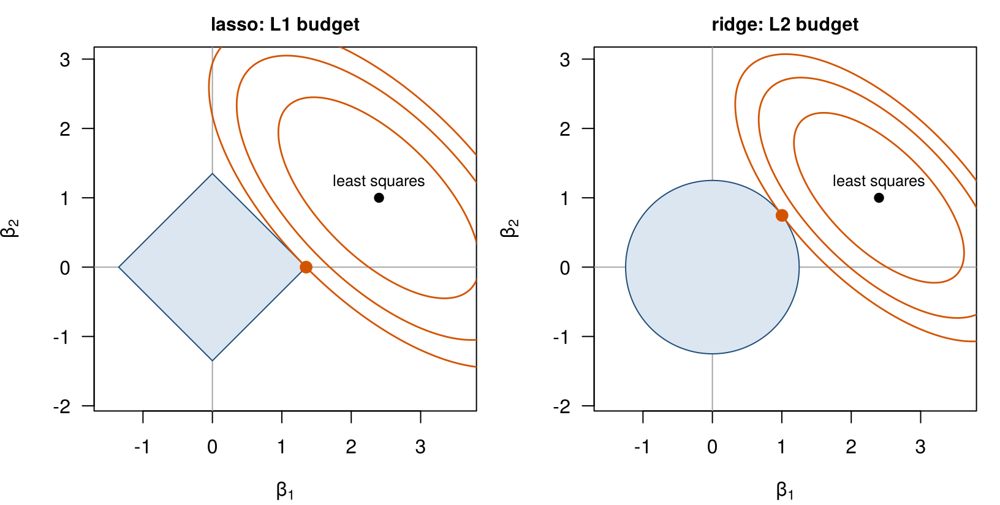
Figure B.4: Coefficient space for two coefficients. The ellipses are contours of the residual sum of squares around the least-squares estimate (black dot). The shaded region is the budget. Left: the L1 diamond has corners on the axes, and the first contact is at a corner, where β₂ is exactly zero. Right: the L2 circle has no corners, and the contact point has both coefficients non-zero.
KEY — The corners of the L1 diamond lie on the axes. That is why the lasso sets coefficients exactly to zero, and ridge regression does not.
↪ Day 9 develops this picture and the algebra behind it.
CautionCheck yourself
In the left panel, suppose the least-squares estimate moved straight upwards to \((2.4, 3)\). Would the lasso solution still have \(\beta_2 = 0\)? Think about which part of the diamond the ellipses would now reach first.
TipAnswer
Probably not. With the estimate high above the \(\beta_1\)-axis, the contours would first touch the diamond near its top corner or along its upper-right edge. On that edge both coefficients are non-zero, and at the top corner \(\beta_1\) is zero instead. Which coefficients the lasso sets to zero depends on where the least-squares estimate lies relative to the corners.
The inner product: a shadow
The inner product (or dot product) of two vectors multiplies them coordinate by coordinate and adds:
For our pair, \(\mathbf{a}^\top\mathbf{b} = 3 \cdot 1 + 0 \cdot 2 = 3\). A single number, but it has a picture. Let light fall perpendicular to \(\mathbf{a}\): the shadow of \(\mathbf{b}\) on \(\mathbf{a}\) has length \(\lVert\mathbf{b}\rVert\cos\theta\), and the inner product is that shadow times the length of \(\mathbf{a}\):
\(\cos\theta = \frac{3}{3\sqrt5} \approx 0.447\), so \(\theta \approx 63.4^\circ\)
perpendicular
\(\mathbf{x}^\top\mathbf{y} = 0\)
—
DEF — Two vectors are orthogonal when their inner product is zero: the shadow of one on the other has length zero.
Cosine similarity of expression profiles
Read counts are relative: sequencing the same sample twice as deeply roughly doubles every count, while the biology is unchanged. The direction of a count vector is the expression profile; its length mostly reflects sequencing depth. Compare three samples on two genes.
Code
m1 <-c(10, 20); m2 <-c(20, 40); m3 <-c(30, 20)par(mar =c(4, 4, 1, 1))plot(NA, xlim =c(0, 45), ylim =c(0, 45), asp =1, las =1,xlab ="reads on gene 1", ylab ="reads on gene 2")abline(0, 2, lty =3, col = col_grey)arrow(c(0, 0), m2, col = col_blue, lwd =2); arrow(c(0, 0), m1, col ="black", lwd =3)arrow(c(0, 0), m3, col = col_orange, lwd =2.5)text(m1[1], m1[2], "sample 1", pos =2); text(m2[1], m2[2], "sample 2", pos =4, col = col_blue)text(m3[1], m3[2], "sample 3", pos =4, col = col_orange)
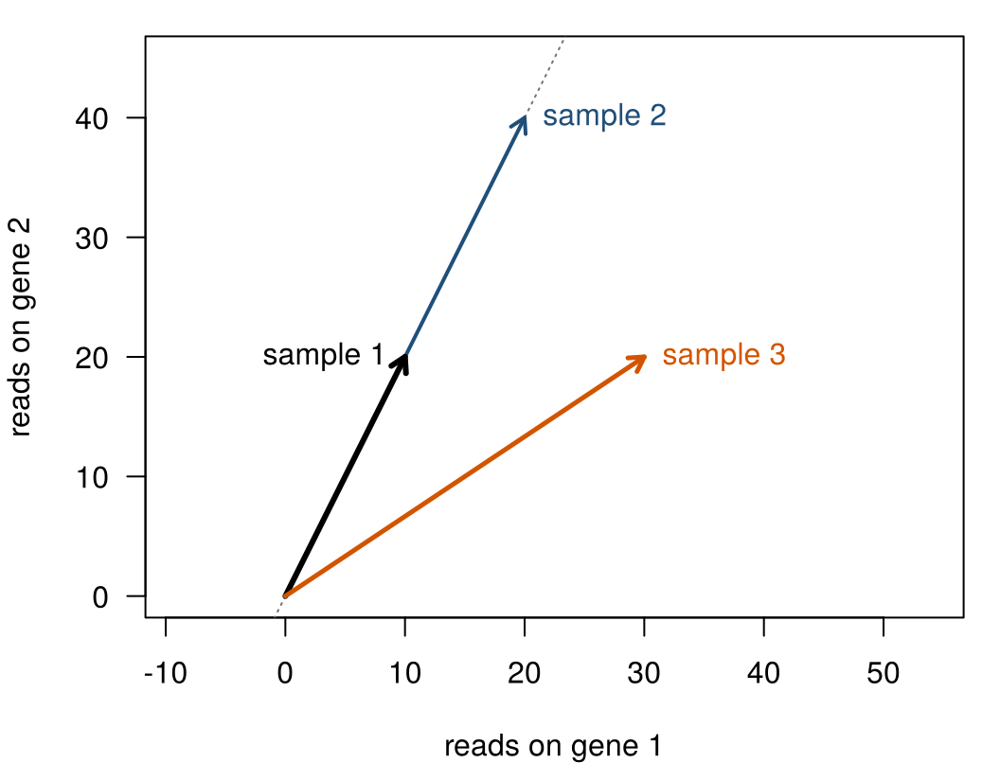
Figure B.6: Samples 1 and 2 lie on the same line through the origin: the same profile, sequenced to a different depth. Sample 3 points in another direction. Euclidean distance calls sample 3 the nearer one; the angle says sample 2 has the same profile.
One fact links this geometry directly to statistics. Centre two variables by subtracting their means; the cosine of the angle between the centred vectors is their correlation.
set.seed(1)x <-rnorm(50); y <-0.6* x +rnorm(50, 0, 0.8)c(cosine_of_centred =cosine(x -mean(x), y -mean(y)), correlation =cor(x, y))
KEY — Centred and orthogonal means uncorrelated. Uncorrelated variables are perpendicular arrows.
↪ Day 3: principal components are chosen perpendicular to each other, and are therefore uncorrelated.
CautionCheck yourself
What is the cosine similarity between a profile \(\mathbf{x}\) and \(5\mathbf{x}\)? And between \(\mathbf{x}\) and \(-\mathbf{x}\)? What does each mean for two expression profiles, and for two centred variables?
TipAnswer
For \(\mathbf{x}\) and \(5\mathbf{x}\) the cosine is \(\frac{5\,\mathbf{x}^\top\mathbf{x}}{\lVert\mathbf{x}\rVert \cdot 5\lVert\mathbf{x}\rVert} = 1\), an angle of \(0^\circ\): the same profile at another depth. For \(\mathbf{x}\) and \(-\mathbf{x}\) it is \(-1\), an angle of \(180^\circ\). Raw counts are never negative, so this cannot happen for two count profiles. For centred variables, a cosine of \(1\) is a correlation of \(1\) and a cosine of \(-1\) is a perfect negative correlation.
Projection: the closest point on a line
Here is a question that looks simple. Three standards in a calibration experiment give absorbances \(y = 1, 2, 4\) at concentrations \(c = 0, 1, 2\). No straight line passes through all three points. Which line is best?
Code
cc <-c(0, 1, 2); yy <-c(1, 2, 4)par(mar =c(4, 4, 1, 1))plot(cc, yy, pch =19, cex =1.3, xlim =c(-0.3, 2.3), ylim =c(0, 4.6), xaxt ="n",xlab ="concentration c", ylab ="absorbance y", las =1)axis(1, at =0:2); abline(h =0:4, v =0:2, col ="grey92")abline(1, 1, lty =2, col = col_grey); abline(1, 1.5, lty =2, col = col_grey)abline(2/3, 1.6, lty =2, col = col_grey)points(cc, yy, pch =19, cex =1.3)
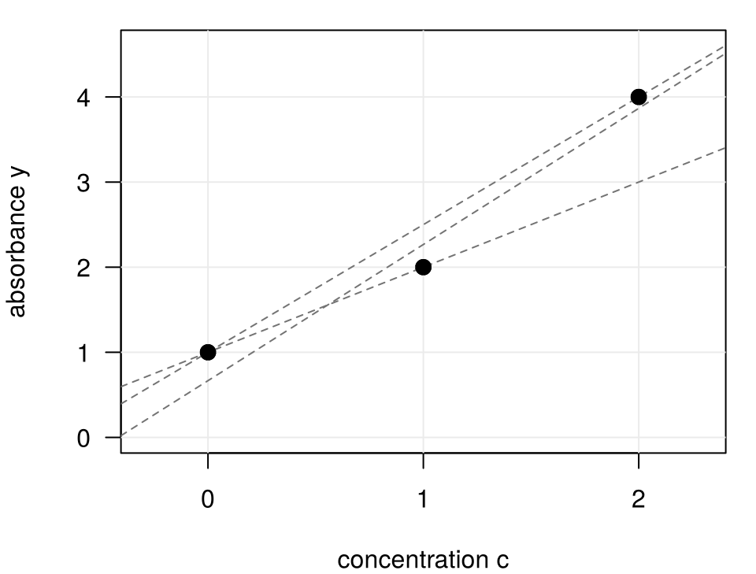
Figure B.7: Three measurements of a calibration line. No straight line passes through all three points. Which line is the best?
To answer it, start with the simplest version: the point on a line closest to a given point. The line through \(\mathbf{b}\) consists of all multiples \(t\mathbf{b}\). The closest point to \(\mathbf{a}\) is the foot of the perpendicular, the projection:
What is left over, \(\mathbf{a} - \hat{\mathbf{a}} = (2.4, -1.2)\), is perpendicular to the line: its inner product with \(\mathbf{b}\) is \(2.4 - 2.4 = 0\).
Code
p_hat <-sum(a_vec * b_vec) /sum(b_vec^2) * b_vecpar(mar =c(3, 3, 1, 1))plane(c(-0.6, 3.6), c(-0.8, 3))abline(0, 2, col = col_blue, lwd =1.2)segments(a_vec[1], a_vec[2], b_vec[1], b_vec[2], lty =2, col = col_grey)arrow(c(0, 0), a_vec, col ="black"); arrow(c(0, 0), p_hat, col = col_blue, lwd =4)arrow(p_hat, a_vec, col = col_orange, lwd =3)right_angle(p_hat, a_vec - p_hat, -b_vec)text(3, 0, "a", pos =1); text(p_hat[1], p_hat[2], "projection (0.6, 1.2)", pos =2, col = col_blue, cex =0.85)text(1.9, 0.75, "residual\n(2.4, -1.2)", pos =4, col = col_orange, cex =0.85)text(1.5, 3, "line through b", col = col_blue, cex =0.85, pos =4)
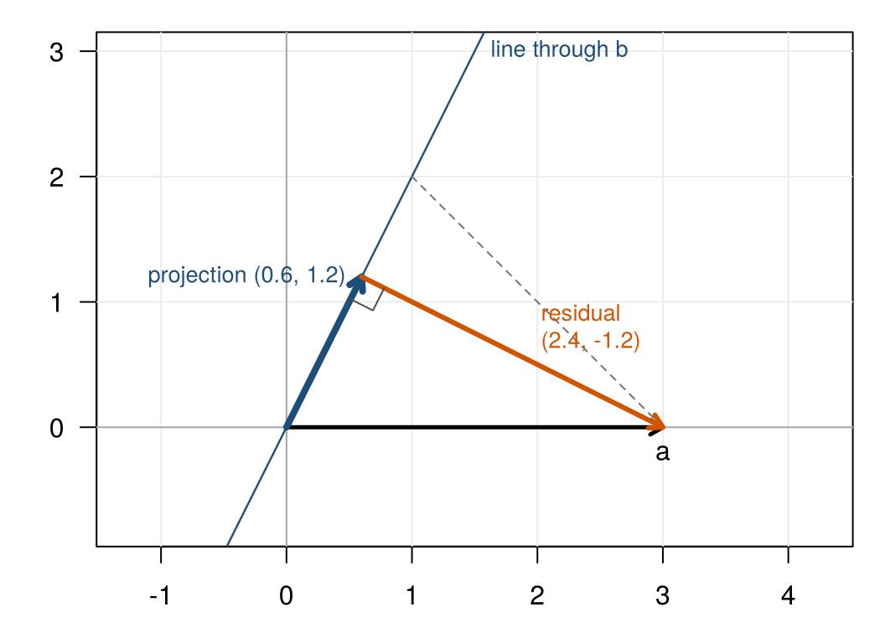
Figure B.8: The projection of a on the line through b (blue) and the residual (orange). The residual is perpendicular to the line, and every other point of the line is further from a.
KEY — The closest point is the one whose residual is perpendicular. “Closest” and “perpendicular” are two descriptions of the same point.
The calibration line is a projection
Now the calibration question. Write all three measurements as one vector \(\mathbf{y} = (1, 2, 4)\) in three-dimensional space. A line \(\beta_0 + \beta_1 c\) predicts the vector
and as \(\beta_0\) and \(\beta_1\) vary, these predictions fill a plane through the origin, the column space of \(\mathbf{X}\). The best line is the point of that plane closest to \(\mathbf{y}\): the projection. Its residual must be perpendicular to both columns of \(\mathbf{X}\),
These are the normal equations of Day 1, now with a picture.
Code
X3 <-cbind(1, cc)beta <-solve(t(X3) %*% X3, t(X3) %*% yy); yh <-drop(X3 %*% beta)par(mfrow =c(1, 2), mar =c(4, 4, 2, 1))plot(cc, yy, pch =19, xlim =c(-0.4, 2.3), ylim =c(0, 4.5), xaxt ="n", las =1,xlab ="concentration c", ylab ="absorbance y", main ="the least-squares line")axis(1, at =0:2); abline(beta[1], beta[2], col = col_blue, lwd =2.5)segments(cc, yy, cc, yh, col = col_orange, lwd =3.5); points(cc, yy, pch =19)text(cc, (yy + yh) /2, c("1/6", "-1/3", "1/6"), pos =c(2, 4, 2), col = col_orange, cex =0.85)cross <-function(p, q) c(p[2] * q[3] - p[3] * q[2], p[3] * q[1] - p[1] * q[3], p[1] * q[2] - p[2] * q[1])nrm <-c(1, -2, 1) /sqrt(6); e1 <- yh /sqrt(sum(yh^2)); e2 <-cross(e1, nrm)az <--25* pi /180; el <-18* pi /180rgt <--sin(az) * e1 +cos(az) * e2upv <-sin(el) * (cos(az) * e1 +sin(az) * e2) +cos(el) * nrmscr <-function(v) c(sum(v * rgt), sum(v * upv))pl <-rbind(scr(-0.3* e1 -1.3* e2), scr(5* e1 -1.3* e2), scr(5* e1 +1.3* e2), scr(-0.3* e1 +1.3* e2))plot(NA, xlim =range(pl[, 1]), ylim =range(pl[, 2]) +c(-0.1, 0.45), asp =1, axes =FALSE,xlab ="", ylab ="", main ="the same fit in the data space")polygon(pl, col ="#DCE6F1", border ="grey60")sy <-scr(yy); sh <-scr(yh)arrow(c(0, 0), scr(X3[, 1]), col ="grey40", lwd =2); arrow(c(0, 0), scr(X3[, 2]), col ="grey40", lwd =2)arrow(c(0, 0), sh, col = col_blue, lwd =3); arrow(c(0, 0), sy, col ="black", lwd =3)arrow(sh, sy, col = col_orange, lwd =3)text(sy[1], sy[2], expression(bold(y)), pos =3); text(sh[1], sh[2], expression(hat(bold(y))), pos =4, col = col_blue)text(pl[2, 1], pl[2, 2], "column space of X", pos =2, col = col_blue, cex =0.8, offset =1.5)
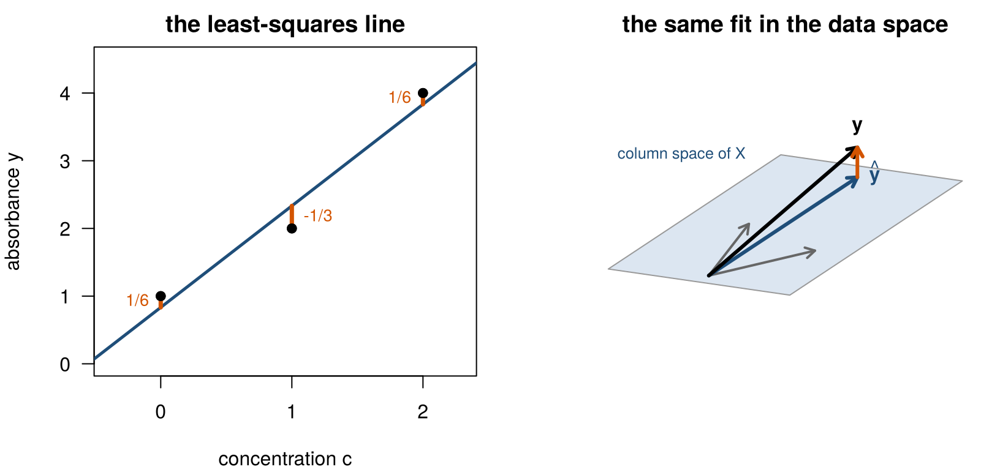
Figure B.9: The same least-squares fit seen twice. Left: the usual picture, with the residuals as vertical segments. Right: the data space ℝ³, one axis per measurement. The predictions of all possible lines form a plane (the column space of X); the fitted vector ŷ is the projection of y onto it, and the residual vector is perpendicular to the plane.
The best line is \(\hat y = \tfrac56 + \tfrac32 c\), with residuals \(\tfrac16\), \(-\tfrac13\) and \(\tfrac16\), and the residual vector is perpendicular to both columns.
KEY — Least squares is a projection. The fitted values are the shadow of the data on the space of everything the model can produce; the residuals are what sticks out perpendicular to it.
↪ Day 1 derived the same solution with derivatives. Days 5 and 7 use this picture to explain degrees of freedom and leave-one-out cross-validation; Appendix C gives the details.
CautionCheck yourself
Without computing, explain why the residuals of any regression with an intercept add up to zero. (Hint: the residual vector is perpendicular to every column of \(\mathbf{X}\). What is the first column?)
TipAnswer
The first column of \(\mathbf{X}\) is \((1, 1, \dots, 1)\). The residual vector is perpendicular to it, so its inner product with that column, which is the sum of the residuals, is zero. For the calibration line: \(\tfrac16 - \tfrac13 + \tfrac16 = 0\).
A matrix deforms space
Multiplying by a matrix moves every point of the plane. The matrix \(\mathbf{M}\) sends the basis vectors \((1, 0)\) and \((0, 1)\) to its own columns, \((2, 0)\) and \((1, 2)\), and drags the whole grid along: squares become parallelograms, and the unit circle becomes an ellipse.
Code
draw_grid <-function(T, col ="grey85") {for (k in-4:6) { s <-seq(-4, 6, length.out =2) l1 <- T %*%rbind(k, s); l2 <- T %*%rbind(s, k)lines(l1[1, ], l1[2, ], col = col); lines(l2[1, ], l2[2, ], col = col) }}par(mfrow =c(1, 2), mar =c(3, 3, 2, 1))plane(c(-2.5, 7), c(-2.5, 5), grid =FALSE, main ="before")draw_grid(diag(2)); lines(u, col = col_green, lwd =2.5)arrow(c(0, 0), a_vec); arrow(c(0, 0), b_vec, col = col_blue)text(3, 0, "a", pos =1); text(1, 2, "b", pos =2, col = col_blue)plane(c(-2.5, 7), c(-2.5, 5), grid =FALSE, main ="after multiplying by M")draw_grid(M_mat); Mu <- u %*%t(M_mat); lines(Mu, col = col_green, lwd =2.5)Ma <-drop(M_mat %*% a_vec); Mb <-drop(M_mat %*% b_vec)arrow(c(0, 0), Ma); arrow(c(0, 0), Mb, col = col_blue)text(Ma[1], Ma[2], "Ma", pos =1); text(Mb[1], Mb[2], "Mb", pos =4, col = col_blue)
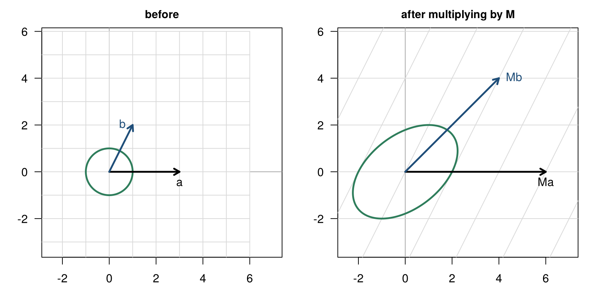
Figure B.10: Left: the plane, with a grid and the unit circle. Right: the same plane after multiplying every point by M. The grid is stretched and sheared, the circle has become an ellipse, and a and b are mapped to Ma = (6, 0) and Mb = (4, 4).
DEF — \(\mathbf{M}\mathbf{x}\) is a weighted sum of the columns of \(\mathbf{M}\), with the coordinates of \(\mathbf{x}\) as weights. The columns show where the basis vectors go.
Measuring with a different ruler
The length of \(\mathbf{M}\mathbf{x}\) can be computed without first deforming the plane:
So there are two equivalent pictures. Either deform the plane with \(\mathbf{M}\) and measure with an ordinary ruler, or leave the plane alone and measure with the matrix \(\mathbf{A}\), whose “circle”, the set of points with \(\mathbf{x}^\top\mathbf{A}\mathbf{x} = 1\), is an ellipse.
Code
EA <-ellipse_A(A_mat)par(mar =c(3, 3, 1, 1))plane(c(-1, 3.4), c(-1, 2.4))lines(u, lty =2, col = col_grey); lines(EA, col = col_orange, lwd =2.5)arrow(c(0, 0), a_vec); arrow(c(0, 0), b_vec, col = col_blue)points(rbind(a_vec /6, b_vec /sqrt(32)), pch =19, col = col_orange)text(3, 0, "a: A-length 6", pos =3, cex =0.85)text(1, 2, expression(paste("b: A-length ", sqrt(32))), pos =4, cex =0.85, col = col_blue)
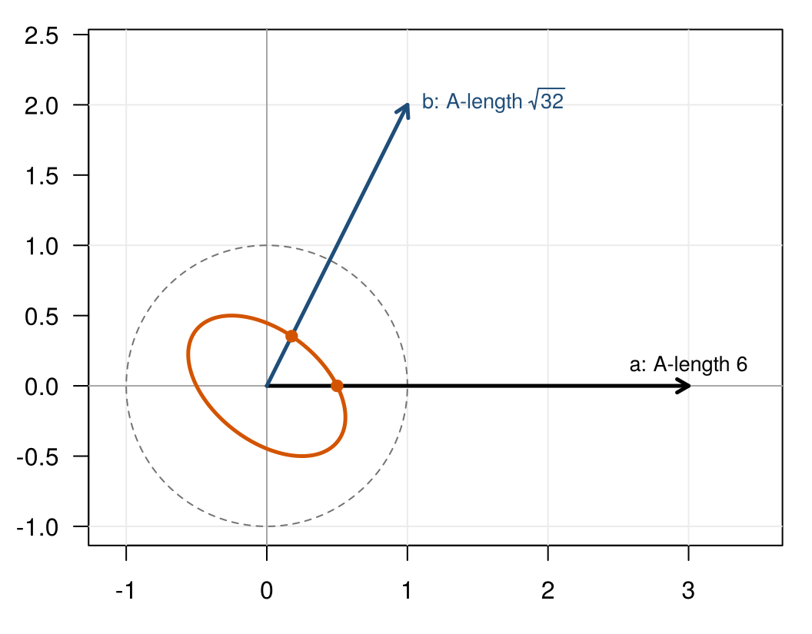
Figure B.11: The vectors with A-length 1 form an ellipse (orange); the ordinary unit circle is dashed. Measured with A, the arrow a is 6 units long, because the ellipse fits into it six times. The ellipse is narrow along a, so a is long in this ruler.
This is more than a curiosity. It appears twice later in the course.
Mahalanobis distance (Day 4) measures with \(\mathbf{A} = \mathbf{S}^{-1}\), the inverse of the covariance matrix of the data. Its unit “circle” has the shape of the data cloud, so a step along the direction in which the data vary a lot counts as short.
\(\mathbf{X}^\top\mathbf{X}\), which appears in every least-squares formula, has the form \(\mathbf{M}^\top\mathbf{M}\). The contours of the residual sum of squares in the regularisation picture above are exactly such ellipses.
KEY — A symmetric matrix of the form \(\mathbf{M}^\top\mathbf{M}\) defines a ruler whose unit ball is an ellipse. Appendix C shows which matrices may be used this way (the positive definite ones).
CautionCheck yourself
Compute the A-length of \(\mathbf{e}_1 = (1, 0)\) and of \(\mathbf{e}_2 = (0, 1)\), using only the diagonal of \(\mathbf{A}\). Which of the two directions does the ellipse reach further in?
TipAnswer
\(\mathbf{e}_1^\top\mathbf{A}\mathbf{e}_1 = a_{11} = 4\), so \(\mathbf{e}_1\) has A-length \(2\); \(\mathbf{e}_2^\top\mathbf{A}\mathbf{e}_2 = a_{22} = 5\), so \(\mathbf{e}_2\) has A-length \(\sqrt 5 \approx 2.24\). A vector that is long in this ruler is one into which the ellipse fits many times, so the ellipse reaches less far along \(\mathbf{e}_2\): it crosses the axes at \(\tfrac12\) horizontally and at \(1/\sqrt5 \approx 0.45\) vertically.
Rotations and new axes
Some matrices deform nothing. A rotation turns the plane without stretching it, so lengths and angles are unchanged. Its columns are perpendicular vectors of length one, which is written \(\mathbf{Q}^\top\mathbf{Q} = \mathbf{I}\).
Code
Qr <-matrix(c(0, 1, -1, 0), 2) # rotation over 90 degreespar(mfrow =c(1, 2), mar =c(3, 3, 2, 1))plane(c(-2.5, 6.5), c(-1, 4.5), main ="rotation Q: nothing deformed")for (v inlist(a_vec, b_vec)) arrow(c(0, 0), v, col ="grey75", lty =3)arrow(c(0, 0), Qr %*% a_vec); arrow(c(0, 0), Qr %*% b_vec, col = col_blue)text(0, 3, "Qa", pos =4); text(-2, 1, "Qb", pos =3, col = col_blue)plane(c(-2.5, 6.5), c(-1, 4.5), main ="deformation M")for (v inlist(a_vec, b_vec)) arrow(c(0, 0), v, col ="grey75", lty =3)arrow(c(0, 0), Ma); arrow(c(0, 0), Mb, col = col_blue)text(Ma[1], Ma[2], "Ma", pos =1); text(Mb[1], Mb[2], "Mb", pos =4, col = col_blue)
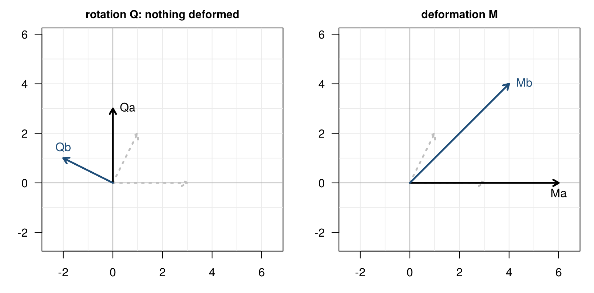
Figure B.12: Left: rotating a and b over 90° keeps their lengths (3 and √5) and the angle between them (63.4°). Right: the deformation M changes both; Ma and Mb make an angle of 45°.
Two perpendicular unit vectors form an orthonormal basis: a new pair of axes. Take \(\mathbf{q}_1 = (0.6, 0.8)\) and \(\mathbf{q}_2 = (-0.8, 0.6)\). The coordinates of \(\mathbf{b}\) on the new axes are simply its shadows on them:
q1 <-c(0.6, 0.8); q2 <-c(-0.8, 0.6)par(mar =c(3, 3, 1, 1))plane(c(-1.2, 2.4), c(-0.4, 2.4))abline(0, 0.8/0.6, col ="grey80"); abline(0, -0.6/0.8, col ="grey80")s1 <-sum(b_vec * q1) * q1; s2 <-sum(b_vec * q2) * q2arrow(c(0, 0), s1, col = col_orange, lwd =2); arrow(s1, b_vec, col = col_orange, lwd =2)arrow(c(0, 0), q1, col = col_green, lwd =3); arrow(c(0, 0), q2, col = col_green, lwd =3)arrow(c(0, 0), b_vec, col = col_blue, lwd =3)right_angle(c(0, 0), q1, q2, s =0.15)text(q1[1], q1[2], expression(q[1]), pos =4, col = col_green)text(q2[1], q2[2], expression(q[2]), pos =2, col = col_green)text(1, 2, "b", pos =3, col = col_blue)text(s1[1], s1[2], "2.2 q1", pos =4, col = col_orange, cex =0.85)
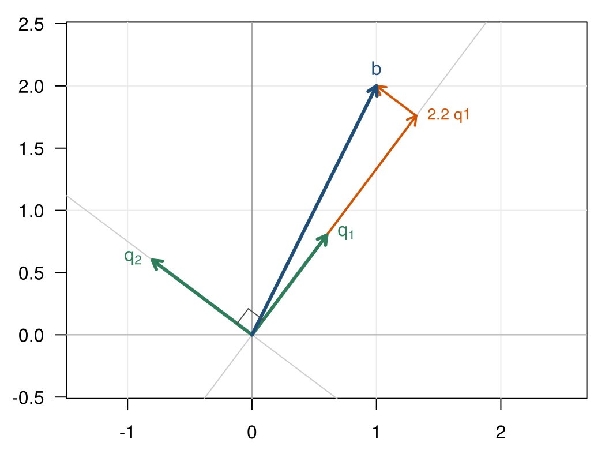
Figure B.13: Coordinates on new perpendicular axes are shadows. The basis vectors q₁ and q₂ (green) are perpendicular and of length 1. The vector b is the sum of its shadow on q₁ (2.2 q₁) and its shadow on q₂ (0.4 q₂).
KEY — In an orthonormal basis, a coordinate is a shadow: one inner product, no system of equations to solve.
↪ Day 3: PCA chooses new orthonormal axes for the data cloud. The scores are the shadows of the samples on those axes, and the loadings are the axes themselves.
CautionCheck yourself
Verify that the coordinates \(2.2\) and \(0.4\) give back a vector of length \(\sqrt5\). Why is that guaranteed?
TipAnswer
\(\sqrt{2.2^2 + 0.4^2} = \sqrt{4.84 + 0.16} = \sqrt5\). Because the new axes are perpendicular and of length one, Pythagoras applies in the new coordinates exactly as in the old ones. Changing to an orthonormal basis is a rotation (or reflection), and a rotation does not change lengths.
Eigenvectors: the axes of a data cloud
Most directions are turned by a matrix. A few special directions are only stretched: these are the eigenvectors, and the stretch factors are the eigenvalues,
\[
\mathbf{A}\mathbf{v} = \lambda\mathbf{v} .
\]
For a symmetric matrix such as \(\mathbf{A}\) the eigenvectors are perpendicular, and they are the axes of its ellipse.
Code
ev <-eigen(A_mat)par(mfrow =c(1, 2), mar =c(3, 3, 2, 1))plane(c(-6.5, 6.5), c(-6.5, 6.5), grid =FALSE, main ="what A does to directions")for (k in0:7) { v <-c(cos(k * pi /8), sin(k * pi /8)); Av <-drop(A_mat %*% v)arrow(c(0, 0), v, col ="grey60", lwd =1.5); arrow(c(0, 0), Av, col ="grey20", lwd =1.2)}for (j in1:2) { v <- ev$vectors[, j]; arrow(c(0, 0), ev$values[j] * v, col = col_green, lwd =3)}plane(c(-6.5, 6.5), c(-6.5, 6.5), grid =FALSE, main ="the axes of the ellipse")lines(u %*%t(A_mat), col = col_orange, lwd =2.5); lines(u, lty =2, col = col_grey)for (j in1:2) arrow(c(0, 0), ev$values[j] * ev$vectors[, j], col = col_green, lwd =3)text(ev$values[1] * ev$vectors[1, 1], ev$values[1] * ev$vectors[2, 1],bquote(lambda == .(round(ev$values[1], 2))), pos =4, col = col_green, cex =0.85)text(ev$values[2] * ev$vectors[1, 2], ev$values[2] * ev$vectors[2, 2],bquote(lambda == .(round(ev$values[2], 2))), pos =2, col = col_green, cex =0.85)
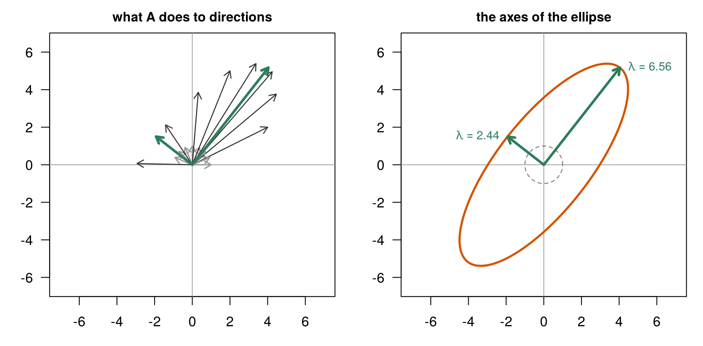
Figure B.14: Left: A acting on unit vectors in eight directions (grey: before, black: after). Most directions are turned; the two eigenvector directions (green) are only stretched. Right: the eigenvectors are the axes of the ellipse that A makes of the unit circle.
Why this matters for data
The covariance matrix \(\mathbf{S}\) of a data cloud is symmetric, and its eigenvectors have a statistical meaning. Project the centred data onto a unit direction \(\mathbf{w}\); the variance of the projected values is
\[
\operatorname{Var}(\text{scores along }\mathbf{w}) = \mathbf{w}^\top\mathbf{S}\,\mathbf{w} .
\]
Let the direction turn through a half circle and record that variance.
Code
set.seed(5)D <- MASS::mvrnorm(300, c(0, 0), Sigma = A_mat)Sd <-cov(D); es <-eigen(Sd)par(mfrow =c(1, 2), mar =c(4, 4, 2, 1))plane(c(-7, 7), c(-7, 7), grid =FALSE, main ="a data cloud and its axes",xlab ="gene 1 (centred)", ylab ="gene 2 (centred)")points(D, pch =19, col =adjustcolor(col_blue, 0.35), cex =0.7)for (j in1:2) arrow(c(0, 0), 2*sqrt(es$values[j]) * es$vectors[, j], col = col_green, lwd =3)ang <-seq(0, pi, length.out =361)vdir <-sapply(ang, function(t) { w <-c(cos(t), sin(t)); drop(t(w) %*% Sd %*% w) })plot(ang *180/ pi, vdir, type ="l", lwd =2.5, col = col_blue, las =1,xlab ="direction (degrees)", ylab ="variance along the direction",main ="variance as the direction turns")abline(h = es$values, lty =2, col = col_green)pc_angle <- (atan2(es$vectors[2, 1], es$vectors[1, 1]) *180/ pi) %%180abline(v = pc_angle, lty =3)text(95, es$values +c(-0.2, 0.2), c("largest eigenvalue", "smallest eigenvalue"), adj =0.5, cex =0.8, col = col_green)
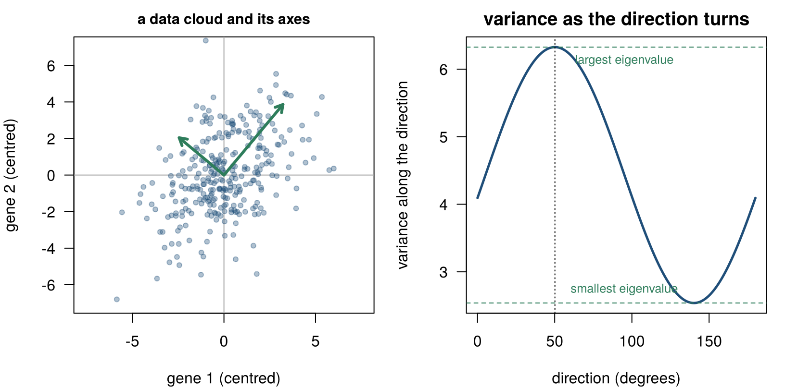
Figure B.15: Left: 300 simulated samples on two genes, with the eigenvectors of their covariance matrix (green), each drawn with length 2√λ. Right: the variance of the data projected onto a direction, as the direction turns. The maximum is the largest eigenvalue, reached at the first eigenvector; the minimum is the smallest eigenvalue, at the second.
KEY — For a covariance matrix, an eigenvector is a direction of extreme variance, and its eigenvalue is that variance. The first eigenvector is the direction in which the data vary most.
↪ This is principal component analysis (Day 3). Day 3 derives the result; Appendix C shows how eigenvectors are computed.
CautionCheck yourself
The eigenvalues of \(\mathbf{A}\) are about \(6.56\) and \(2.44\). Their sum is \(9\), which is also \(a_{11} + a_{22} = 4 + 5\). If \(\mathbf{A}\) were a covariance matrix, what would this sum mean?
TipAnswer
The diagonal of a covariance matrix holds the variances of the variables, so \(4 + 5\) is the total variance. The eigenvalues are the variances along the new perpendicular axes, and they add up to the same total. Rotating to new axes redistributes the variance without changing the total. Day 3 uses this to say how much of the total variance each principal component explains: here \(6.56/9 \approx 73\%\) along the first eigenvector.
The singular value decomposition, and why ridge regression works
Every data matrix, of any shape, can be written as a rotation, a stretch along perpendicular axes, and another rotation:
The columns of \(\mathbf{V}\) are the axes of the data cloud (the eigenvectors of \(\mathbf{X}^\top\mathbf{X}\)), and the singular values\(d_j\) on the diagonal of \(\mathbf{D}\) measure the spread along each axis: \(d_j^2\) is an eigenvalue of \(\mathbf{X}^\top\mathbf{X}\).
This decomposition explains what goes wrong with least squares when predictors are correlated, and how ridge regression repairs it. Least squares divides by \(d_j^2\) along each axis. A direction in which the data hardly vary has a tiny \(d_j\), and dividing by it blows up the estimate. Ridge regression divides by \(d_j^2 + \lambda\) instead, which shrinks the fit along axis \(j\) by the factor
\[
\frac{d_j^2}{d_j^2 + \lambda} .
\]
Code
lam <-10^seq(-2, 3, length.out =200)dvals <-c(10, 3, 1, 0.3)par(mar =c(4, 4, 1, 1))plot(NA, xlim =range(lam), ylim =c(0, 1), log ="x", las =1,xlab =expression(lambda), ylab ="fraction of the fit that is kept")cols <-c(col_blue, col_green, col_orange, "firebrick")for (k inseq_along(dvals)) lines(lam, dvals[k]^2/ (dvals[k]^2+ lam), lwd =2.5, col = cols[k])legend("bottomleft", bty ="n", lwd =2.5, col = cols, legend =paste("d =", dvals), cex =0.85)
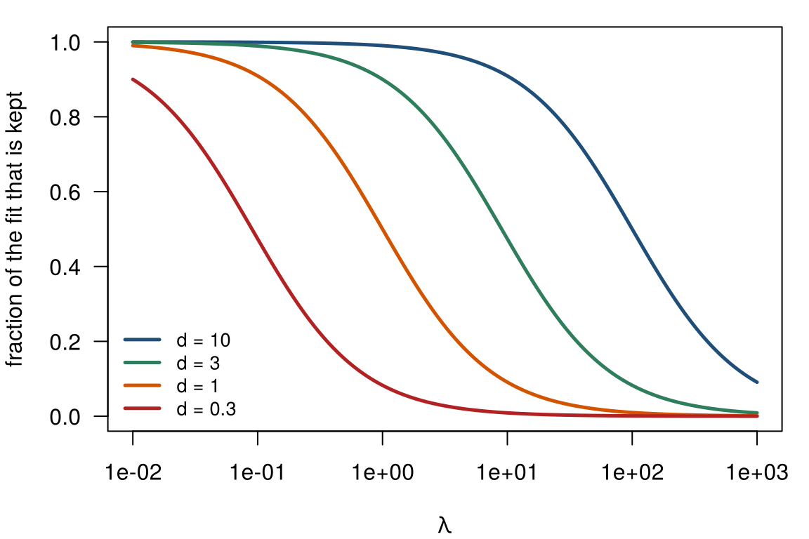
Figure B.16: Ridge regression shrinks the fit along each axis of the data by the factor d²/(d² + λ). Directions with much spread (large d) are hardly shrunk; directions with little spread, the unstable combinations of correlated predictors, are shrunk most.
KEY — Ridge regression keeps the directions in which the data carry information and suppresses the directions in which they do not.
↪ Day 9: ridge regression, the lasso, PCR and PLS all act on these axes in different ways.
CautionCheck yourself
With \(\lambda = 1\), what fraction of the fit is kept along an axis with \(d = 10\), and along an axis with \(d = 0.3\)? What does that say about which information ridge regression gives up?
TipAnswer
For \(d = 10\): \(100/101 \approx 0.99\), almost everything is kept. For \(d = 0.3\): \(0.09/1.09 \approx 0.08\), less than a tenth is kept. Ridge regression gives up mainly the directions along which the predictors hardly vary. Those are exactly the directions in which least squares is most unstable, so a small bias buys a large reduction in variance.
Summary
Idea
Picture
Returns on
a sample is a point; a data set is a cloud
the data cloud
all days
L2 and L1 norms; distance
circle and diamond
Days 4 and 8
the shape of the unit ball
corners give zeros
Day 9
inner product, angle, cosine similarity
a shadow
Days 3 and 4
correlation is the cosine of centred vectors
perpendicular means uncorrelated
Day 3
projection; least squares
perpendicular residual
Days 1, 5 and 7
a matrix deforms; \(\mathbf{M}^\top\mathbf{M}\) as a ruler
circle to ellipse
Days 4 and 9
orthonormal axes; coordinates as shadows
rotated axes
Day 3
eigenvectors of a covariance matrix
axes of the data ellipse
Day 3
singular values; ridge shrinkage
\(d^2/(d^2 + \lambda)\)
Day 9
Reading
ISLR assumes this material. The sections above are the background for §6.2 and §6.3 (regularisation and dimension reduction) and §12.2 (principal components). For the formal side, see Appendix C and Mathematics for Machine Learning by Deisenroth, Faisal and Ong, Chapters 2 to 4.